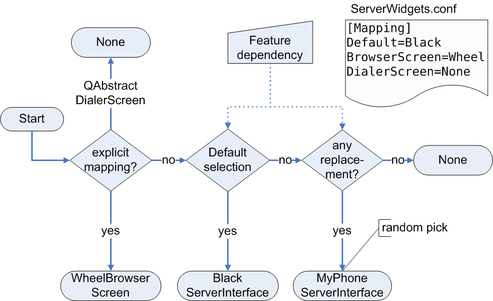

|
Home · All Namespaces · All Classes · Grouped Classes · Modules · Functions | |
The QtopiaServerApplication class provides additional QtopiaApplication functionality. More...
#include <QtopiaServerApplication>
Inherits QtopiaApplication.
The QtopiaServerApplication class provides additional QtopiaApplication functionality.
The QtopiaServerApplication class acts as a QtopiaApplication instance in Qt Extended Server. QtopiaServerApplication is primarily responsible for bringing up and shutting down the Qt Extended server and acts as the "core" controller in the system. This class is part of the Qt Extended server and cannot be used by other Qt Extended applications.
The Qt Extended server is structured as a collection of largely independent tasks that are responsible for performing a small, well defined portion of work or functionality which often form the "backend" to other system capabilities. For example, the network management APIs ultimately communicate with the QtopiaNetworkServer task, other tasks may operate more independently. Tasks can be thought of as the building blocks that form the Qt Extended server, when arranged appropriately.
Tasks are QObjects and may work together by exporting C++ interfaces. Other tasks or modules within the server may request tasks that support a particular interface. For example, when the system is shutting down, all the tasks that provide the SystemShutdownHandler interface are invoked to perform all the necessary cleanup.
The order in which the task objects are instantiated is configurable. Both the configurator and the task developer has a degree of control over the instantiation order. The configurator controls the start up order through the $QPEDIR/etc/Tasks.cfg file which has the following simple syntax:
# Sample comment for TaskGroup1. Comments may appear anywhere, as long as
# the first character in the line is a '#'
[TaskGroup1]
TaskName1
+TaskGroup2
# Likewise, blank lines, as well as leading and trailing white space is
# ignored
[TaskGroup2]
TaskName2
TaskName3
Task groups are free-form descriptors used to collect related classes. Task group names may only contain alphanumeric characters and must not not contain spaces. A task name is the name given to the task when it is declared in code. It consists of alphanumeric characters and cannot contain spaces. Groups may be nested hierarchically as shown in the example. Nesting one group in another is exactly the same as pasting the body of the nested group into the parent group. The above Tasks.cfg file is equivalent to:
[TaskGroup1]
TaskName1
TaskName2
TaskName3
[TaskGroup2]
TaskName2
TaskName3
The following group names are reserved and have a special purpose:
| Group Name | Description |
|---|---|
| prestartup | The prestartup contains tasks that will be started immediately after Qt Extended is executed. |
| startup | The startup group contains tasks to be launched at startup. |
| idle | The idle group contains tasks which will be launched after the UI is shown while the system is idle. |
| exclude | The exclude group contains tasks that, while present in the server, will never be created. Adding a task to the exclude group is equivalent to removing it from the server. |
| All | The All group is a catch all tasks whose startup preference is not otherwise specified. |
How these groups interact will be covered shortly.
Tasks are constructed in one of two ways: preemptively or on-demand.
| Type | Description |
|---|---|
| Preemptive Tasks | Preemptive tasks are those started by the system during startup, regardless of whether or not any other task has asked for it. Some preemptive tasks can have their construction delayed by being placed in the idle group. |
| On-demand Tasks | On-demand tasks are those whose creation is deferred until another task requests it be started. Tasks in the startup group in Tasks.cfg are the only tasks that are created preemptively. All other tasks (with the exception of those in the exclude group are started on demand. |
While it is possible to instantiate an on-demand task by name, it is generally not advisable as doing so often creates unnecessary coupling within the system. Instead, requesters ask the system to return a task that supports a given interface. Doing so allows a particular implementation to be switched out without any code changes to the requestor.
By default, preemptive tasks are created before the user interface is displayed. This means a task which is expensive to construct delays showing the user interface. To avoid this, tasks in the Tasks.cfg file can be marked as suitable for delayed construction by placing them in the idle group.
Tasks in this group will be started shortly after the UI is displayed if the system is idle. If the user interacts with the system, their construction may be further delayed. Tasks which provide background services without any user-visible components are suitable for this group.
Tasks in the Tasks.cfg file can be marked as demand started tasks by appending the :demand to their task name. Similarly, group names can have :demand appended, which is equivalent to adding the designator to each of their containing task or sub-group names. Demand tasks will never be picked by the All catch all task, but are otherwise subject to all ordering primatives.
The qtopiaTask() and qtopiaTasks() templates are used to request a task interface. qtopiaTask() returns the first task that implements the interface and qtopiaTasks() returns all the tasks that implement the interface. Each of these calls takes an optional boolean parameter to indicate whether the system should instantiate a task to satisfy the request (if needed) or only return tasks that have previously been instantiated.
The order of tasks returned by qtopiaTask() and qtopiaTasks() is controllable through the order in which they appear in the Tasks.cfg file. Consider the Tasks.cfg flattened so that it consists of a list of all groups in the order in which they appear. Each task in this imaginary task list implements zero or more interfaces. The order tasks will be returned when requested by interface is the same order as those tasks appear in this list, with duplicates removed.
As a special "catch-all", primarily to prevent incorrect configuration, the special All task can be added to the startup or idle group. This has the effect of inserting all tasks not otherwise assigned to a group or explicitly marked as demand started tasks.
While the QtopiaServerApplication class itself is not strictly a task, it is instantiated during startup by the task system in the same way as other tasks under the special task name QtopiaApplication. The QtopiaApplication task should be instantiated immediately after any environment setup or cleanup type tasks as many other tasks have an implicit reliance on its existence.
The order that the system will try and start preemptive tasks and the order in which tasks will be given interface preference can be read from the value space immediately following the QtopiaApplication task executing. The exact schema is:
| Item | Type | Description |
|---|---|---|
| /System/Tasks/<TaskName>/Order/Static | int | The preemptive order that the system determined it would launch tasks. This may be different from the actual order if one task demand loads another that would otherwise be loaded later. |
| /System/Tasks/<TaskName>/Order/Launch | int | The order that the tasks were actually launched in. This key will only exist if the task is active. |
| /System/Tasks/<TaskName>/Order/Interface | int | The order that the task will be given when determining interface associations. |
| /System/Tasks/<TaskName>/State | String | "Disable" if the task was in the exclude list, "Active" if the task is running, or "Inactive" if not. |
A tutorial on how to develop new server tasks can be found in the Device Integration guide.
The above server tasks are linked into the Qt Extended server at build time. To increase the flexibility server tasks can be provided via a plug-in mechanism. This allows the addition of new tasks after the deployment of the server binary. Server task plugins must implement the ServerTaskPlugin interface in order to be recognized by the system.
For more information on how to develop plug-in based server tasks refer to the Server task plug-in tutorial.
There are many cases of Qt widgets being used throughout the Qt Extended server that may need to be customized to achieve a desired look and feel. For example, while it supports customization through theming, a customer that wants to replace the Qt Extended phone dialer with a "rotary dial" style dialer would need to replace the entire dialer widget.
To simplify the task and minimize the code changes needed to replace visual components of the Qt Extended Server, the concept of Qt Extended Server Widgets exists. Qt Extended Server Widgets splits the definition of a visual component - or server widget - into two parts: the server widget interface (hereafter referred to as the AbstractWidget) and the concrete server widget implementation (ConcreteWidget). While not technically necessary, the AbstractWidget is generally an abstract interface that derives directly from QWidget.
Rather than using the regular new ClassName(parent, flags) syntax for instantiating a widget, the special qtopiaWidget() template method, parameterized on AbstractWidget, is provided. This method uses the server widgets replacement system to look up the ConcreteWidget instance type it should return.
Developers use the QTOPIA_REPLACE_WIDGET(), QTOPIA_REPLACE_WIDGET_WHEN() and QTOPIA_REPLACE_WIDGET_OVERRIDE() macros to provide ConcreteWidget for a particular AbstractWidget. The server widget replacement system then resolves which ConcreteWidget to return by executing the following set of rules in order until a ConcreteWidget is determined.
| Rule | Description |
|---|---|
| Explicitly specified | The Trolltech/ServerWidgets configuration file is read to determine if the ConcreteWidget to use has been explicitly specified. The configuration file contains one group, Mapping that contains mappings between AbstractName and ConcreteName. How these two names are determined is discussed below. For example, [Mapping]
BrowserScreen=Wheel
DialerScreen=Rotary
Unless the specified widget does not exist, the mapping is always honored. That is, using QTOPIA_REPLACE_WIDGET_WHEN() can not override explicitly specified widgets. The special name None will disable the widget, causing qtopiaWidget() to always return null. |
| Primary Default | The primary default is the value of the Mapping/Default key, or Default if not specified. The primary default name is tried as the ConcreteName. Feature dependencies are honored. |
| Other Defaults | All ConcreteName's beginning with the primary default name are tried. Feature dependencies are honored. |
| All Replacements | All available ConcreteWidgets are tried. Feature dependencies are honored. |
The AbstractName and ConcreteName names used to identify a server widget are derived from the widget class names. AbstractName is set to the AbstractWidget's full name, unless the name begins with QAbstract in which case it is set to the widget class name, minus the QAbstract prefix. The ConcreteName is set to the class name of the ConcreteWidget, unless the class name ends with the AbstractName of the widget it is replacing, in which case it is set to the widget class name minus the AbstractName suffix. These rules are designed to simplify writing mapping files - a class WheelBrowserScreen replacing QAbstractBrowserScreen is written as BrowserScreen=Wheel rather than QAbstractBrowserScreen=WheelBrowserScreen.
The following image also demonstrates the widget selection process:

Usually each call to qtopiaWidget() returns a new server widget instance. In some cases this behaviour is not desired. If it is necessary to return a reference to an already existing instance of a server widget Qt's meta system class info should be used to mark an abstract server widget as singleton. This means that every concrete implementation of this abstract widget will follow the singleton pattern. The SingletonServerWidget string is reserved to enable this feature. If the class info tag is missing Qt Extended assumes that the class does not follow the singleton pattern.
For example:
//qabstracthomescreen.h class QAbstractHomeScreen : public QWidget { QOBJECT Q_CLASSINFO("SingletonServerWidget", "true"); // ... };
The following code segment demonstrates the difference:
QAbstractHomeScreen* ref1 = qtopiaWidget<QAbstractHomeScreen>();
QAbstractHomeScreen* ref2 = qtopiaWidget<QAbstractHomeScreen>();
if ( ref1 == ref2 ) {
...
//The SingletonServerWidget class info is set to true for
//QAbstractHomeScreen (as seen in above example).
} else {
...
//The SingletonServerWidget class info is set to false
//or not defined at all.";
}
A tutorial on how to develop new server widgets can be found in the QAbstractServerInterface class documentation and the Device Integration guide.
| Constant | Value | Description |
|---|---|---|
| QtopiaServerApplication::NoShutdown | 0 | No shutdown has been requested. |
| QtopiaServerApplication::RebootSystem | 2 | The server terminates and initiates the reboot of the system. |
| QtopiaServerApplication::RestartDesktop | 3 | The server terminates and requests its restart by the calling environment. |
| QtopiaServerApplication::ShutdownSystem | 1 | The server terminates and initiates the shutdown of the system. |
| QtopiaServerApplication::TerminateDesktop | 4 | The server terminates only. |
This enum determines how tasks are started when QtopiaServerApplication::startup() is called.
| Constant | Value | Description |
|---|---|---|
| QtopiaServerApplication::ImmediateStartup | 0 | Requested tasks are started immediately. The call to startup() will block until all requested tasks have been started. |
| QtopiaServerApplication::IdleStartup | 1 | Requested tasks are queued to be started when the server is idle. The call to startup() is non-blocking. |
Add an object them to me to create an "aggregate" task. Aggregate tasks are designed to work around the limitations in Qt's support for multiple interface inheritance by allowing multiple objects to be "stuck together" to form a single object from the task system's perspective.
For example, consider the following interfaces:
class ApplicationTypeLauncher : public QObject {};
QTOPIA_TASK_INTERFACE(ApplicationTypeLauncher);
class SystemShutdownHandler : public QObject {};
QTOPIA_TASK_INTERFACE(SystemShutdownHandler);
Using direct inheritance a single task could not implement both interfaces. Instead, a task can create one object that implements the ApplicationTypeLauncher interface and one that implements the SystemShutdownHandler interface and aggregate them together.
class MyLauncherShutdown : public SystemShutdownHandler
{
public:
MyLauncherShutdown(MyLauncherType *);
};
class MyLauncherType : public ApplicationTypeLauncher
{
public:
MyLauncherType()
{
MyLauncherShutdown *s = new MyLauncherShutdown(this);
QtopiaServerApplication::addAggregateObject(this, s);
}
};
QTOPIA_TASK(MyLauncherType, MyLauncherType);
QTOPIA_TASK_PROVIDES(MyLauncherType, ApplicationTypeLauncher);
QTOPIA_TASK_PROVIDES(MyLauncherType, SystemShutdownHandler);
When the system attempts to cast a task to a particular interface, it first tries the task object itself, and then each of the aggregate objects for that task.
Returns the argc reference passed to startup().
Returns the argv reference passed to startup().
During the server shutdown all object based server tasks are deleted. However some tasks may not require such management as they install themselves into some form of backend functionality which may take care of the tasks life time. Setting exclude to true excludes task from the task system's memory management.
An example is the QtopiaPowerManager and its sub class which installs itself as the screensaver. The QWS server owns the screen saver object and therefore takes already care of the objects life time.
Install the filter for QWS events. Installing an event filter is equivalent to deriving from QtopiaApplication directly and overriding the QtopiaApplication::qwsEventFilter() method.
Multiple QWS event filters may be installed simultaneously. In this case, each event filter is queried sequentially in the order it was installed. If any filter filters the event, subsequent filters will not be called.
Return the instantiated QtopiaServerApplication instance. An instance of the class must have been constructed prior to calling this method.
Return the task with name taskName. If onlyRunning is true, the task will be returned only if it has already been instantiated, otherwise it will be instantiated and returned.
Remove all instances of filter from the list of event filters. This method should be called when an event filter is destroyed. No automatic cleanup is performed.
Initiates a system shutdown of the specified type.
Emitted whenever the user or an application requests that the system shutdown. A system shutdown is requested by sending a shutdown() message to the QPE/System QCop channel.
Generally a UI will be connected to the shutdownRequested() signal to ask the user what they want to do. This UI should then invoke the shutdown() method to perform the appropriate action.
Returns the type of shutdown previously requested by calling shutdown(), or NoShutdown if no shutdown has been requested.
Launches server tasks. This method is used to start the Qt Extended server and should never be called from other code. Returns true on success, false on failure.
argc and argv should be the values passed to the main() function. startupGroups contains a list of Task groups to start. type determines the behavior for launching the tasks.
Returns the task system's configuration file.
Returns the path to an object in the value space that the task taskName can use to store status information. Will return a null byte array if the value space has not been initialized. This method is for task implementors only.
Sets a value space attribute for task taskName to value. This is a convenience method to simplify the usage of the value space for a task. For more complex usage, tasks should use the taskValueSpaceObject() to request a path, and manually create a QValueSpaceObject for their own use. Returns true upon success; otherwise returns false.
The value remains in the value space until the task is unloaded.
Return a task instance that supports the T interface. If onlyActive is true the system will only select from tasks that are already active. Otherwise, if needed, the system will instantiate tasks to satisfy the request.
Returns all task instances that support the T interface. The instances are in the intended instantiation order. If onlyActive is true the system will only select from tasks that are already active. Otherwise, if needed, the system will instantiate tasks to satisfy the request.
Returns a concrete implementation of T, with the specified parent and flags. Concrete implementations are provided with the QTOPIA_REPLACE_WIDGET(), QTOPIA_REPLACE_WIDGET_WHEN() and QTOPIA_REPLACE_WIDGET_OVERRIDE() macros and selected as described in the Qt Extended Server Widgets overview.
Each call to this function returns a new instance of the requested server widget unless the server widget has been marked as singleton widget via
Q_CLASSINFO("SingletonServerWidget", "true");
Mark the Object as task TaskName. Only QObject derived types may be tasks. QTOPIA_DEMAND_TASK() differs from QTOPIA_TASK() in that tasks installed using this macro are automatically marked as "demand" tasks, unless specifically overridden in the Tasks.cfg file. That is, tasks installed like this will only be instantiated on request, not during server startup.
As the QTOPIA_DEMAND_TASK() macro defines symbols, it should appear only in the implementation file of a task, and not in the header file.
Mark ConcreteWidget as a replacement for AbstractWidget. While AbstractWidget does not actually have to be abstract, it is generally an interface that ConcreteWidget implements. This macro should appear as part of the definition of ConcreteWidget.
For example,
// wheelbrowserscreen.h class WheelBrowserScreen : public QAbstractBrowserScreen { // ... }; // wheelbrowserscreen.cpp QTOPIA_REPLACE_WIDGET(QAbstractBrowserScreen, WheelBrowserScreen);
Set ConcreteWidget as the static replacement for AbstractWidget.
While as efficient as possible, use of the widget replacement system instead of explicitly instantiating concrete classes does introduce some indirection costs. For shipping software where this flexibility is not necessary, QTOPIA_REPLACE_WIDGET_OVERRIDE() can be used to force the selection of a specified ConcreteWidget. This eliminates the cost of the widget replacement system for the particular AbstractWidget by bypassing the replacement system. The macro should appear inline with the AbstractWidget declaration, and must have visibility of the ConcreteWidget's declaration.
For example,
// qabstractbrowserscreen.h class QAbstractBrowserScreen : public QWidget { // ... }; #include "wheelbrowserscreen.h" QTOPIA_REPLACE_WIDGET_OVERRIDE(QAbstractBrowserScreen, WheelBrowserScreen);
Note that any server widget that uses this marco will not work with singleton server widgets. Calling qtopiaWidget() on such widgets will always return a new instance.
Mark ConcreteWidget as a replacement for AbstractWidget. While AbstractWidget does not actually have to be abstract, it is generally an interface that ConcreteWidget implements. This macro should appear as part of the definition of ConcreteWidget.
Unless explicitly specified in the Trolltech/ServerWidgets file, a widget specified in this fashion if Feature is currently provided by Qtopia, as returned by the QtopiaFeatures::hasFeature() method.
For example,
// touchscreendialer.h class TouchscreenDialerScreen : public QAbstractDialerScreen { // ... }; // touchscreendialer.cpp QTOPIA_REPLACE_WIDGET_WHEN(QAbstractDialerScreen, TouchscreenDialerScreen, Touchscreen);
Install a functional task. A functional task is one that does not consist of an instantiable object, but is, instead, a simple function. Static tasks can obviously not provide interfaces.
TaskName should be set to the name of the task, and Function to the static function to call to run the task.
As the QTOPIA_STATIC_TASK() macro defines symbols, it should appear only in the implementation file of a task, and not in the header file.
Mark the Object as task TaskName. Only QObject derived types may be tasks.
As the QTOPIA_TASK() macro defines symbols, it should appear only in the implementation file of a task, and not in the header file.
Mark the specified QObject-derived ClassName as a task interface. Any class interface that is required to support the qtopiaTask<>() or qtopiaTasks<>() request mechanism must be marked as a task interface.
The QTOPIA_TASK_INTERFACE() macro must be used in a header file, immediately following the interface's declaration.
If the interface is not a QObject type, but rather a Qt Q_INTERFACE() style interface, use the QTOPIA_TASK_QINTERFACE() macro instead.
Indicate that the task TaskName provides Interface, as previously declared by QTOPIA_TASK_INTERFACE. A task can provide more than one interface.
For a task to support the interface, it must either inherit directly from the interface or aggregate itself with an object that does during its construction. The QtopiaServerApplication::addAggregateObject() method can be used to aggregate a task with another object.
Mark the specified InterfaceName as a task interface. Any class interface that is required to support the qtopiaTask<>() or qtopiaTasks<>() request mechanism must be marked as a task interface.
The QTOPIA_TASK_!INTERFACE() macro must be used in a header file, immediately following the interface's declaration.
InterfaceName should be a Qt Q_INTERFACE style interface. If you want to use a QObject derived type as an interface, use the QTOPIA_TASK_INTERFACE() macro instead.
| Copyright © 2009 Trolltech | Trademarks | Qt Extended 4.4.3 |